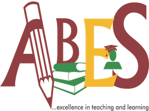

Teaching Learning CETL (E-Learning)

The Centre of Excellence for Teaching and Learning (CETL), was established to enhance the quality of teaching of
the faculty at ABES Engineering College. A problem in Engineering education is always felt and remains
unanswered most of the times that even in the subjects of very experienced faculty, having good command over the
subject; students could hardly retain 10‐15% of the whole lecture just after a short period of 15‐20 days. These
problems were found in the DNA part of the teaching process; the very fundamental approach towards teaching. The
conventional passive teaching methods of lecturing at length were found to be the main cause of these
problems.
ABES wanted to tackle this issue and so decided to establish a dedicated centre named CETL (Centre of Excellence
for teaching and learning) equipped with the latest technology, tools and supporting infrastructure and a
committed team to enhance the efficiency and effectiveness of the teaching learning process at the institute.
The Centre engages in a range of professional development activities that seek to provide teaching staff with
the requisite pedagogical skills to improve the learning that takes place in their classrooms, as well as
strategies for gaining knowledge about trends and developments in learning and teaching in higher education.
- ABESEC has its own YouTube Channel with more than 18000 subscribers and 17Lac+ views.
- More than 1000 video lectures, developed by the ABESEC faculty members, are available on the YouTube channel.
ABESEC CETL Youtube Channel
Our Youtube Channel
Vision
- To ensure effective classroom delivery
- To promote learner centric teaching
- To promote development of e-content
- To create standard and structured subject content
Mission
- To find gap/opportunities for improvements in current lecture delivery
- To provide relevant training opportunities and resources
- To provide innovative pedagogy based framework
- To create structured & systematic plan of lectures using teaching innovation.
- To provide a platform where faculty contributes in development of standard e-learning content.
- To provide quick and easy access of e-content to target audience.
- To enable faculty members to contribute in planning, development & enhancement of standard course content.
BOG Team
Mr. Akhilesh Kumar Srivastava
Computer Science and Engineering
Ms Madhuri Gupta
Computer Science
Ms. Shweta Kaushik
Information Technology
Dr. Asmita Yadav
Master of Computer Application
Dr. Deepak Garg
Electronics and Communication Engineering
Dr. Vikas Singh Bhadoria
Electrical and Electronics Engineering
Dr. Dharmendra Singh
Mechanical Engineering
Dr. Pooja Soni
Master of Business Administration